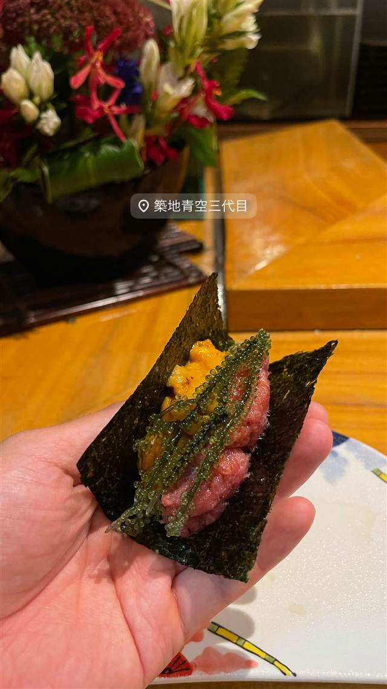

琉球鮨 築地青空三代目 那覇本店
築地で百年続く江戸前の技を沖縄食材で握る琉球鮨の手巻き寿司
築地青空三代目
「琉球鮨 築地青空三代目 那覇本店」は、築地で100年以上の歴史を持つ江戸前寿司チェーンの沖縄店。総本店で50年握り続けた総親方の技を受け継いだ板長が、沖縄の食材を用いた独自の「琉球鮨」として磨き上げている。
TRIVIA
豆知識
- 築地で100年以上続く江戸前寿司の技術を、沖縄の食材で握る「琉球鮨」として発展させている。
REVIEWS
世間の評判
3.40食べログ
沖縄食材の琉球鮨とコース満足度
- 海ぶどう巻きなど沖縄の地魚を使ったネタを評価する声が非常に多い
- 1万円台のコースは内容の割にコスパが良いと評価する声が複数ある
- 混雑時はサービスが行き届かず接客がかなり雑になるという声が複数ある
- 店名の割には沖縄産ネタが少なく本州の魚が中心だと感じる声もある
食べログ 口コミ271件
| 系譜 | 東京・築地で100年以上続く江戸前寿司の技術を受け継ぐ「築地青空三代目」チェーンの沖縄店で、沖縄の食材を使う「琉球鮨」を打ち出す。 |
|---|---|
| 看板 | 江戸前の技法で沖縄食材を握る「琉球鮨」、手巻き寿司。 |
| こだわり | 江戸前寿司の伝統技法を沖縄の魚介・食材に応用して握る。 |
| どこから | 遠方 |
| 営業時間 | 月〜土 17:00-23:00 日 休み |
| 予算 | 夜 ¥8,000～¥9,999 |
| 場所 | 県庁前駅 沖縄県那覇市松山1-15-14 |
食べたもの：手巻き寿司
NEARBY
近い店・同じ系統の店
-
 ハワイ 牧志駅
ハワイアンフルーツカフェ -the Sea-
久米島の海洋深層水を極薄の氷に削り海を食べるかき氷に仕立てる
昼 ¥1,000～¥1,999 夜 ¥1,000～¥1,999
ハワイ 牧志駅
ハワイアンフルーツカフェ -the Sea-
久米島の海洋深層水を極薄の氷に削り海を食べるかき氷に仕立てる
昼 ¥1,000～¥1,999 夜 ¥1,000～¥1,999
-
 ブランチ 牧志駅
C&C BREAKFAST OKINAWA
牧志公設市場の食材を使うエッグベネディクトと沖縄ハワイ北欧融合の空間
昼 ¥1,000～¥1,999
ブランチ 牧志駅
C&C BREAKFAST OKINAWA
牧志公設市場の食材を使うエッグベネディクトと沖縄ハワイ北欧融合の空間
昼 ¥1,000～¥1,999
-
 アイス・ジェラート 美栄橋駅
ブルーシール 国際通り店
米軍統治下の乳製品会社発祥、紅芋やサトウキビ味のアイス
昼 ～¥999 夜 ～¥999
アイス・ジェラート 美栄橋駅
ブルーシール 国際通り店
米軍統治下の乳製品会社発祥、紅芋やサトウキビ味のアイス
昼 ～¥999 夜 ～¥999
-
 沖縄そば 首里駅
てぃしらじそば
趣味が高じて脱サラ店主が始めた、売り切れ御免の自家製麺沖縄そば
昼 ¥1,000～¥1,999 夜 ¥1,000～¥1,999
沖縄そば 首里駅
てぃしらじそば
趣味が高じて脱サラ店主が始めた、売り切れ御免の自家製麺沖縄そば
昼 ¥1,000～¥1,999 夜 ¥1,000～¥1,999
-
 とんかつ 旭橋駅
豚々ジャッキー
あぐー豚とやんばる島豚だけを使うとんかつ、引き戸の奥の隠れ家
昼 ¥1,000～¥1,999 夜 ¥3,000～¥3,999
とんかつ 旭橋駅
豚々ジャッキー
あぐー豚とやんばる島豚だけを使うとんかつ、引き戸の奥の隠れ家
昼 ¥1,000～¥1,999 夜 ¥3,000～¥3,999
-
 カクテル・ウイスキー 県庁前駅
BAR Owl（バーアウル）
Bar百名店に選ばれた沖縄産フルーツのカラフルなカクテル
夜 ¥5,000～¥5,999
カクテル・ウイスキー 県庁前駅
BAR Owl（バーアウル）
Bar百名店に選ばれた沖縄産フルーツのカラフルなカクテル
夜 ¥5,000～¥5,999
ONSEN & SAUNA